9th World Rogaining Championships 2010
A Variety of Fences and How to Cross Them
June 2010
WRC 2010 is set entirely on private farmland. It is very productive grassland and has many landowners and many fences. New Zealand has led the world in the development of electric fences, and fences are often partially or completely electrified. Conventional wire fences usually have the top wire barbed. Older conventional fences have often been modified with an additional electric wire, added to the side or top.
Electric fences in general are powered by a system of pulses, usually at one second intervals. For technical people, the pulses can be up to 8000 volts with a duration of up to 1 millisecond, and an energy of several joules in extreme cases. A shock is very uncomfortable but not dangerous.
You will need to carry some form of insulation to help in crossing electric fences. A good-quality plastic map-bag, or a laminated map, is useful. Some people carry a short length of polythene water-pipe, split along its length. I normally use either a map bag, or a wooden stick.
An example of several fences, and some notes on how to cross them, follows.
CONVENTIONAL POST AND WIRE FENCE.
Conventional fences are either 7 or more plain steel wires with a barbed wire on top, or a steel netting fence with a barbed wire on top.
Ordinary wire fences are crossed by dropping your pack over the fence and crawling between the wires.
The following picture shows a netting fence. You cannot crawl between the wires. Cross it by climbing the netting right next to a post, with your hand on the post for support. Put as much weight as possible on the post. Take care with the top barbed wire.
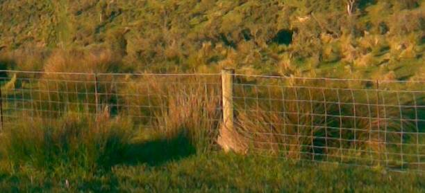
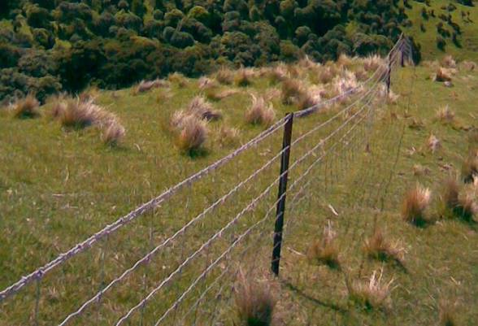
This fence is similar but with steel posts (called warratahs). If you can’t find a wooden post, cross as described above using a warratah, or sometimes (midway between posts) you can hold the wire down low enough to step over.
POST AND WIRE with some wires ELECTRIC.
These fences look conventional, but some wires are electrified. You must look at all fences to identify if they are electric. Examine how the wires are attached to posts. Electric wires must have an insulator of some sort.
Some fences have small wooden posts made of naturally insulating, impregnated wood. They do not have insulators.
Keep an eye out for these small posts. Always look for the bigger posts to see which wires are hot. If you see only small wooden posts with four wires, they will be electric. Cross them by holding down the wires with your plastic bag.
The next fence has small wooden posts but only two “hot” wires. You can tell by looking at the insulators on the big wooden post. The top wire is barbed also. This is a difficult fence. Cross by crawling under the bottom “cold” wire, or by carefully climbing on the cold wires at a big post.
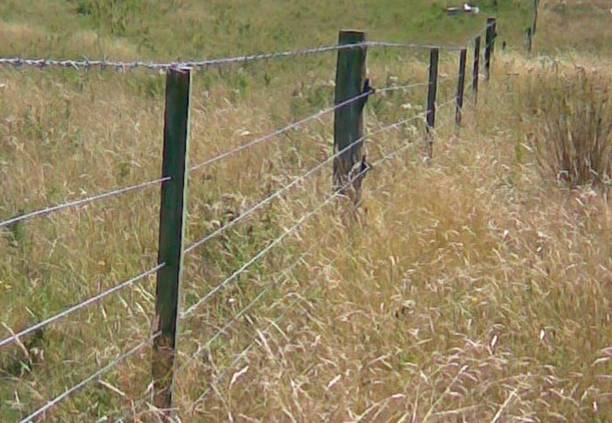
The next fence is easier; it has three electric wires but no barbs. Cross by crawling though the second and third “cold” wires, or by climbing at the post.
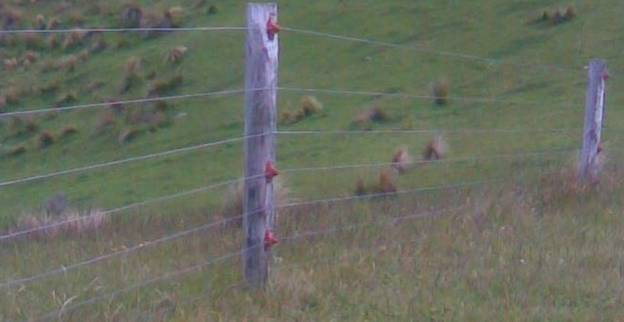
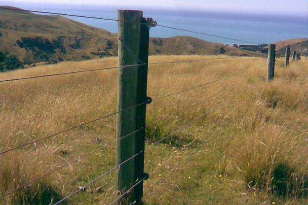
Again, this fence has three “hot” wires. Cross by crawling between the 4th and 5th “cold” wires, or by climbing carefully at the post. You may also be able to hold down the top wire, halfway between posts, with your plastic bag.
POST AND WIRE with ELECTRIC OUTRIGGERS.
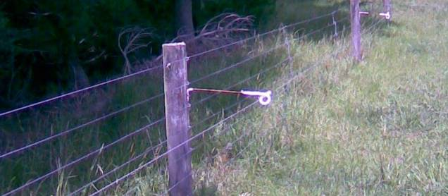
“Hot” outriggers are often used to improve conventional fences. In the example above, crawl under the electric wire and through the original fence wires low down.
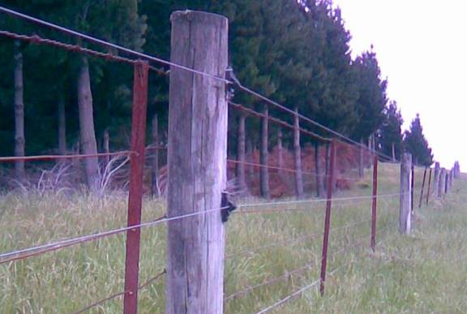
This one has two “hot” wires on new wooden posts. Crawl between the bottom wires.
ALL-ELECTRIC fences.
The next three fences are 4- or 5- wire electric. Cross by holding down the top wire with your plastic bag. You know they are electric by looking at how they are attached to posts.
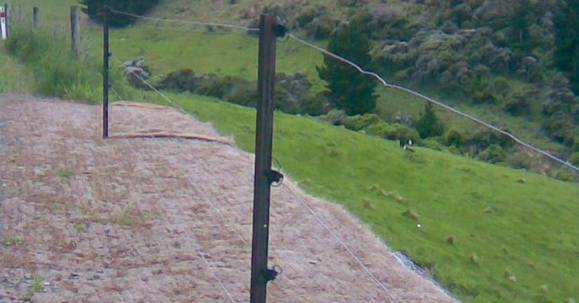
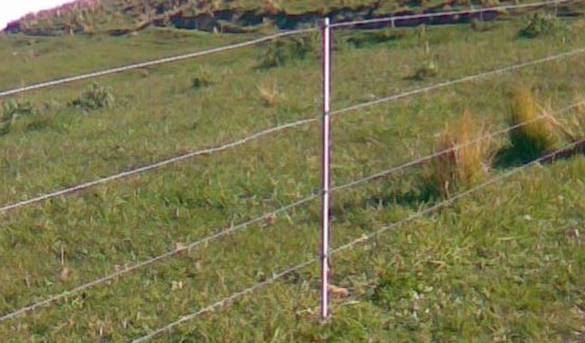
This one uses plastic posts so there are no insulators, but it is still electric.
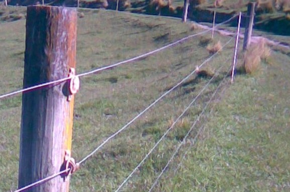
This has a mixture of wood and plastic.
CONVENTIONAL fences with outriggers on BOTH sides.
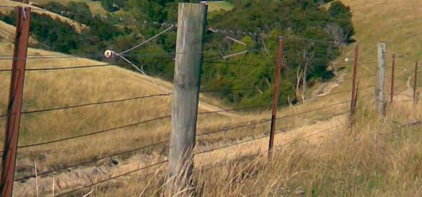
Old conventional wire fence with electric out-riggers each side. Cross by crawling through, well below the hot wires.
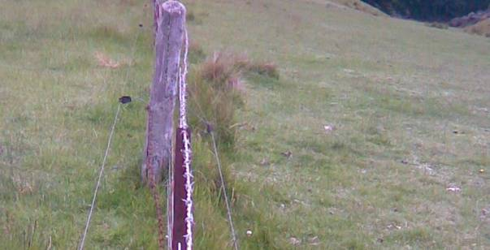
Another dual-outrigger fence. The hot wires are half-way up, and there is barbed wire on top, so you have to keep very low to get through this one.
Pete Squires and Phil Bones
June 2010